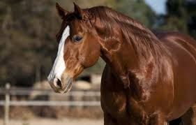

algumas curiosidades sobre cavalos
Os cavalos são animais que passam longos períodos de tempo alimentando-se. Eles podem ficar entre 12 e 18 horas pastando. A expectativa de vida do cavalo é de, aproximadamente, 25 anos. Cavalos que ficam confinados por muito tempo podem desenvolver distúrbios emocionais.

abaixo teremos outras raças de cavalos
venha outros cavalos pelo mundo
- cavalo Árabe
- Frísio
- Mustangue
- Shire
- Puro-sangue inglês